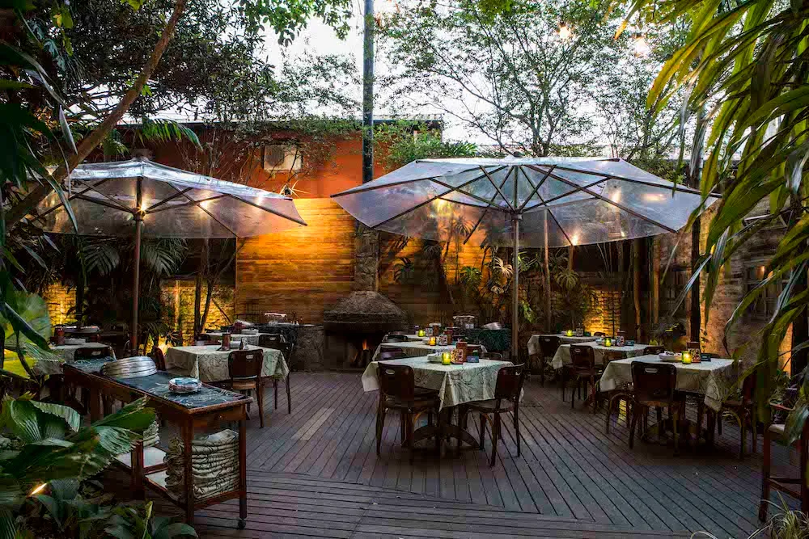

QUEM SOMOS
O Sabor Gourmet foi fundada em 2020 e, desde então, tem como principal objetivo ser um local de encontro e lazer para os moradores de Parapuã e região. Com um ambiente descontraído e mesas ao ar livre, o cliente conta com uma extensa variedade de petiscos, que podem ser acompanhados por um chopp bem gelado e uma boa música ao vivo. Além disso, o restaurante trabalha com saborosas refeições, lanches e pastéis. O local também é adequado para levar a criançada, que encontrará ótimas opções no cardápio da casa. E para quem quer saborear uma das delícias do restaurante sem sair de casa, o Sabor Gourmet realiza entregas na região urbana de Parapuã.
